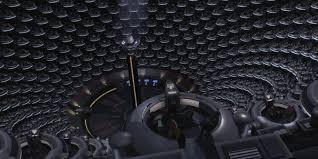

CLONE WARS COMMAND
The Galactic Republic
The Galactic Republic, also known simply as the Republic, is the central governing body of the galaxy at the onset of the Clone Wars. It is a vast democratic union composed of thousands of star systems, united under a constitution that governs trade, law, and security.
Political Structure
The Republic’s government is a complex bureaucracy centered in the Galactic Senate, located on the ecumenopolis planet Coruscant. The Senate is composed of representatives (senators) from each member system and sector.
The Supreme Chancellor serves as the executive leader of the Republic, elected by the Senate to oversee galactic affairs and the defense of the Republic. The Chancellor works closely with the Jedi Order, who act as peacekeepers and generals of the Republic military.
Various Senate committees and bureaucracies manage sectors including trade, infrastructure, and security, but political infighting and corruption are common challenges during this era, exploited by separatist movements.
Republic Military Overview
The Republic military during the Clone Wars is primarily composed of the Grand Army of the Republic, an extensive force of clone troopers genetically engineered from the bounty hunter Jango Fett. The army is organized into legions, battalions, and specialized units, each led by Jedi Generals and experienced Clone Commanders.
Key branches include:
- Clone Troopers: The backbone of the Republic’s military might, trained for various combat roles across different terrains and combat situations.
- Jedi Generals: Acting as commanders, the Jedi lead military campaigns and maintain peace and order.
- Republic Navy: Providing starship support, fleet defense, and transport, vital in large-scale engagements and planetary invasions.
- Specialized Units: Such as the Galactic Marines and Doom Company, elite forces trained for specific tactical missions.